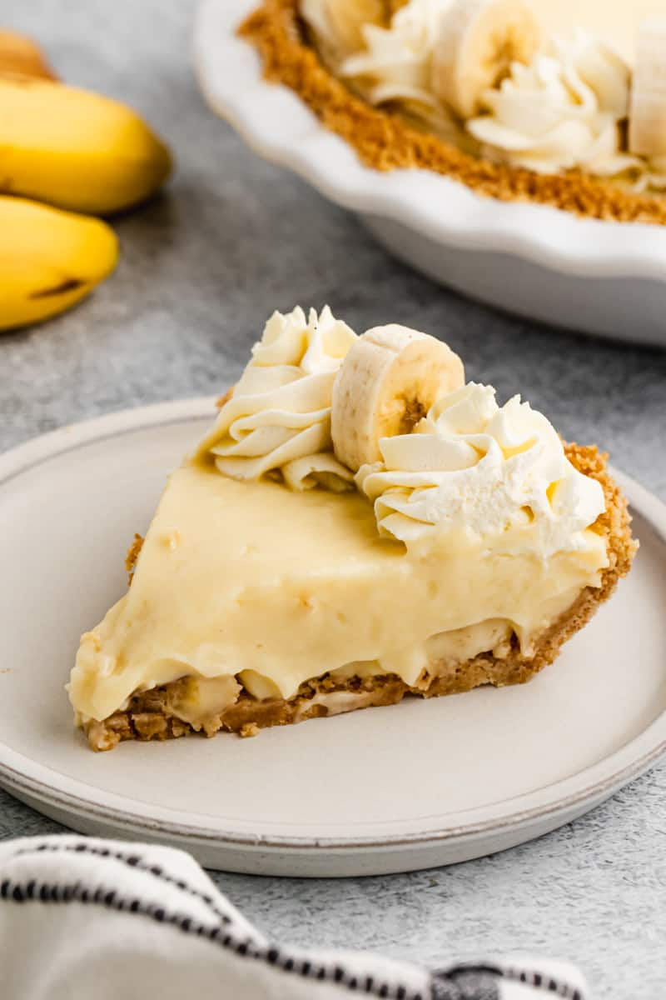

Banana Cream Pie

Description
Who doesn't like bananas? You'll go
'bananas' for this delicious banana cream
pie recipe! Best eaten on a warm day. Enjoy!
Ingredients
- 2 1/2 cups whole milk
- 3/4 cup granulated sugar
- 1/8 teaspoon salt
- 4 large egg yolks
- 5 tablespoons corn starch
- 2 teaspoons vanilla extract
- 1/4 cup unsalted butter, room temperature
- 4 bananas sliced
- 1 pie crust
- (optional) whipped cream, for topping
Steps
- Prepare your pie crust. I prefer using a graham
cracker crust for this pie, but a regular pie
crust is just as delicious!
- Combine the milk with the sugar and salt in a
medium-sized pot over medium heat. Whisk until
the mixture is hot to touch, and the sugar has
completely dissolved.
- Whisk together the egg yolks and cornstarch.
- While stirring, gradually pour ~½ cup of the milk
mixture into the yolk mixture. Then, add the yolk
mixture to the pan with the remaining milk mixture.
- With the pan over medium heat, stir until the
pudding is thick and bubbly. Remove from heat
and whisk in the vanilla extract and softened
butter until it's melted and completely combined.
- Cover the top of the pudding with plastic wrap and
let it cool.
- Starting with banana slices, alternately layer the
banana slices and pudding over the crust.
- Let the pie chill for at least an hour prior to
serving.
- Serve with whipped cream (optional). Enjoy!
Home